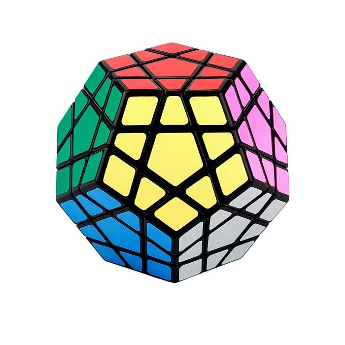

- 1*1 Rubik Cube:-
The 1x1x1 is an interesting puzzle design that takes a new approach to the world of Rubik’s
Cubes and twisty puzzles that we have never seen before. It has revolutionized the way we see the world of
puzzling and has made an impact only comparable to that of the original Rubik’s Cube.
- 2*2 Rubik Cube:-
The 2x2x2 Rubik's Cube (also called as Pocket Cube or Mini Cube) is the two layered version
of a Rubik's Cube. This puzzle was invented by Rubik Erno before the 80s and was patented on March 29, 1983. At
first sight it may seem to be a simple puzzle but it's good to know that it has more than 3,6 million possible
permutations so it's impossible to solve it by just randomly twisting the faces.
- 3*3 Rubik Cube:-
It is most popular cube.This Rubik's Cube is the most famous puzzle worldwide. It is both loved
and hated for being so seemingly complex, and addictive, at the same time. It was invented in 1974, by the
Hungarian inventor, architect and professor Ernő Rubik.
- 4*4 Rubik Cube:-

It is also same as of other cube with only difference of having 4 layers.
Also it has other way to solve.
- 5*5 Rubik Cube:-
Thing which differentiate this cube is that it has 5 layer.
- Megamix Rubik Cube:-

The Megaminx or Mégaminx is a dodecahedron-shaped puzzle similar to the Rubik's Cube. It has a
total of 50 movable pieces to rearrange, compared to the 20 movable pieces of the Rubik's Cube.
The Megaminx is
made in the shape of a dodecahedron, and has 12 faces and center pieces, 20 corner pieces, and 30 edge pieces.
The face centers each have a single color, which identifies the color of that face in the solved state.
The edge pieces have two colors, and the corner pieces have three. Each face contains a center piece, 5 corner
pieces and 5 edge pieces. The corner and edge pieces are shared with adjacent faces. The face centers can only
tate in place, but the other pieces can be permuted by twisting the face layer around the face center.
There are two main versions of the Megaminx: one with 6 colors, with opposite faces having the same color, and one
with 12 different colors. The 12-color Megaminx is the only type legal in official WCA competitions, and is
therefore much more popular than the 6-color version.
The objective of the puzzle is to scramble the colors, and then restore it to its original state of having one
color per face.
- Mirror Rubik Cube:-
The Mirror Blocks, also known as the Mirror Cube and Bump Cube, is a type of twisty
puzzle and shape modification of the standard 3x3x3 Rubik's Cube and was invented in 2006. The puzzle's
internal mechanism is nearly identical to that of the Rubik's Cube, although it differs from normal 3x3
cubes in that all pieces are the same color (typically reflective gold or silver stickers) and are identified
by shape since each one is also a distinct rectangular prism.
The Mirror Blocks was originally invented by Hidetoshi Takeji in 2006. He initially named the puzzle the
"Bump Cube" due to it having an uneven, bumpy surface when scrambled. At a competition in Osaka, Hidetoshi
showed his puzzle to a speedcuber who took great interest in it. Hidetoshi decided to lend his puzzle to the
speedcuber, who showed it to a project group. In the fall of 2008, the puzzle was first mass-produced in
Boston by Rubik's and manufactured by MegaHouse. When it was released, it was officially named the Mirror
Blocks.